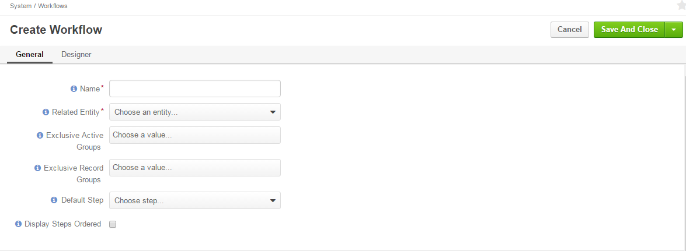
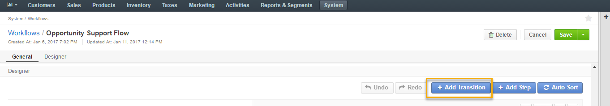
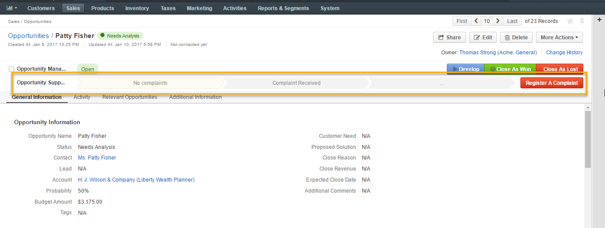
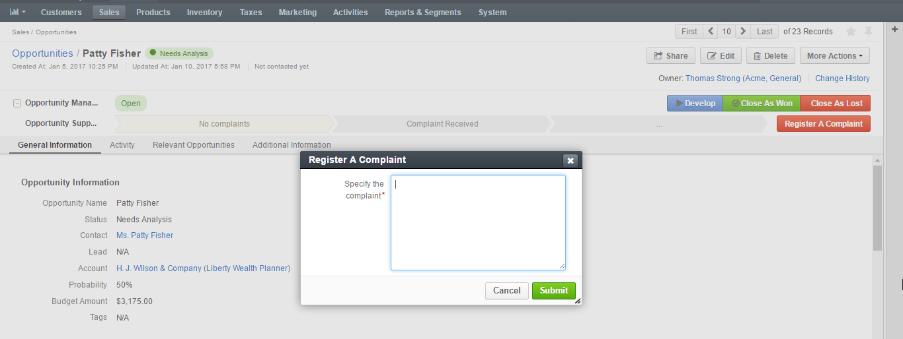
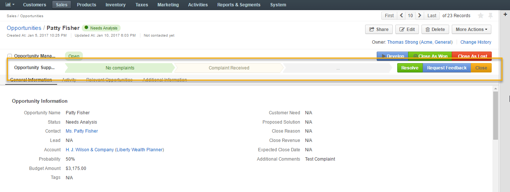
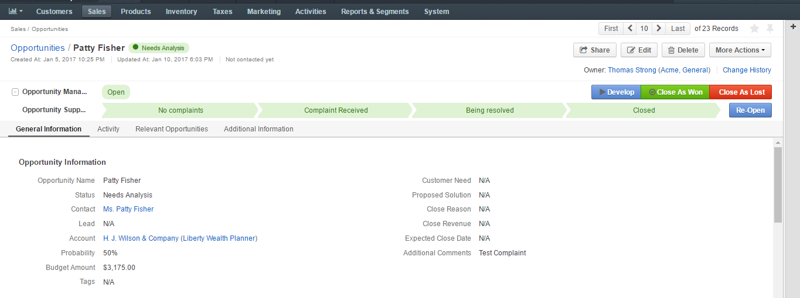
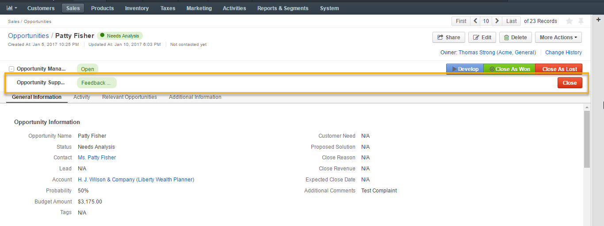
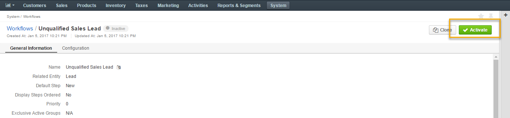
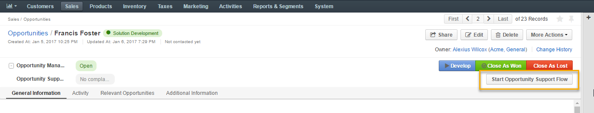

Workflow Management
- Overview
- System vs Custom Workflows
- Workflow Steps, Transitions, and Attributes
- Create a Workflow
- Set a Workflow Configuration Parameters
- Workflow Visualization
- Multiple Active Workflows
- Workflow Management
- User Permissions for Individual Workflows
- Workflow Translations
- Detailed Information About System Workflows
Overview
In OroCommerce, a workflow is a business process that involves multiple user interactions or sequential phases. It may trigger other workflows and change the status of the items involved in a business process.
In the front store, workflows organize and direct users work (e.g. during the checkout), making them follow particular steps in a pre-defined order (e.g. provide shipping address, then select shipping method from the options supported for the destination), or preventing them from performing actions that either contradict or conflict with the logical steps of a process (e.g. a customer may not be able to submit an order without their manager’s approval).
In the OroCommerce management console, workflows help users follow standard procedures that may be of a non-linear nature with alternating flow that depends on the available information, related items status, connectivity with integrated solutions, etc.
System vs Custom Workflows
In Oro applications, any workflow may be classified as either system or custom. System workflows are provided out of the box. Their modification is limited in order to keep core functionality operational. However, if you create a Custom workflow from scratch, you can tailor it for your needs without any restrictions.
For more information on system and custom workflows, see System Workflows and Custom Workflows.
Available System Workflows
The following system workflows are provided out of the box in OroCommerce:
Workflow Steps, Transitions, and Attributes
Each process or action applied to a record is called a workflow transition. On the interface, transitions are usually initiated when a user clicks the corresponding button or icon. There are two types of transitions:
- Transitions that take a user from one state to another and connect to each step in the workflow.
- Self-transitions that do not change steps in the workflow.
Every workflow has the Start transition that launches the workflow.
A transition can be defined as soon as there is at least one step besides Start. However, it is often simpler to define all workflow steps and then all the transitions between them.

Attributes are characteristics of the record. For example, a ZIP code and a street name are attributes of an address. In the course of each transition, you can change some attributes of the processed record.
A workflow may have configuration parameters (also known as variables). For example, the Alternative Checkout workflow includes reviewing of an order by an authorized person. This is usually required only for orders exceeding a certain amount, so the workflow’s configuration parameter enables you to set an order subtotal limit that triggers the alternative checkout.
If enabled (see the section below), the workflow widget displays the process steps defined in workflow configuration on the record view page. Multiple workflow widgets can be displayed for one record at the same time.

Create a Workflow
To create a workflow for an entity:
In the main menu, navigate to System > Workflows.
Click Create Workflow on the top right of the page.

On the Create Workflow page, specify the details of your workflow in the General section.
Once the details in the General section have been specified, add steps and transitions in the Designer section.
When done, click Save.
General Section
The General section of the create a workflow page contains the following information:
| Field | Description |
|---|---|
| Name | The name of the workflow. |
| Related Entity | A related entity is the entity for which the workflow is created. When the workflow is active, it can be launched and executed on the records of its related entity. |
| Exclusive Active Groups | Exclusive Active Groups is a list of group names for which the current workflow should be active exclusively. Determining Exclusive Record Groups allows to set up mutually exclusive workflows in order to configure how they each correlate in the system. This makes it possible for only one workflow to be active, or for an entity record to use only one workflow from the group at a time. |
| Exclusive Record Groups | Exclusive Record Groups specify how workflows apply to certain sets of records in order to limit their applicability. This lets users create specific workflows for specific segments (subsets) of records. For example, no concurrent transitions are possible among workflows in same exclusive record group. |
| Default Step | Specifying the default steps launches the workflow in a particular step by default. For instance, when you activate Opportunity Management Flow, a newly created opportunity will appear as open, if open was specified as the default step. If no step is selected, all newly created records will have no workflow associated with them, and it must be launched with one of the starting transitions. |
| Display Steps Ordered | Display Steps Ordered box is not checked by default.
|
Using Workflow Designer
The Designer section consists of a table and an interactive chart representations of a workflow.

Within the table, you can perform the following actions for a transition:
- Update (clicking the transition name opens the Edit Transition form).
- Clone (clicking the Clone icon next to the transition name opens the Clone Transition dialog).
- Delete (clicking the Delete icon next to the transition launches name Delete Confirmation dialog).
For a step, you can perform the following action by clicking the corresponding icons in the Actions column:
- Add a transition to a step (clicking the + icon opens the Add New Transition dialog).
- Update (clicking the Edit icon opens the Edit Step dialog).
- Clone (clicking the Clone icon opens the Clone Step dialog).
- Delete (clicking the Delete icon launches the Delete Confirmation dialog).

Within the chart, you can:
- Add a transition (clicking the + Add Transition button at the top of the chart opens the Add Transition dialog).
- Add a step (clicking the + Add Step button at the top of the chart opens the Add Step dialog).
- Autosort (clicking the Auto Sort button at the top of the chart automatically shapes your chart).
- Rearrange the chart for clearer workflow view (drag-and-drop transitions and steps in the chart as required, or click the Expand button in the top right corner of the chart).
- Zoom in/out (click the Zoom In / Zoom Out button in the top right corner of the chart to zoom the chart in/out, or select zoom percent from the list).
- Show transition labels (select this check box in the top left corner of the chart to display transition labels in the chart).
- Drag transitions from one step to another (point to one of four corners of the step box, and when the cursor changes shape to the hand, click the corner and drag an arrow to another step).

- Undo/Redo changes (click the Undo / Redo button at the top of the cart to revert or restore changes made to the chart).
- Edit/Clone/Delete a step/transition (point to the step/transition button, and when the arrow appears, click it, and then click the Edit / Clone / Delete icon.
Note
All actions available for transitions and steps in the table are available in the chart as well.
Example Introduction
As an example, we are going to create the Opportunity Support Flow workflow to show how a workflow is configured and visualized.
Add a Step
To add a step to a workflow:
Click Add Step in the top right corner of the chart.

In the Add Step dialog, complete the following fields:
| Field | Description |
|---|---|
| Name | The name of the step that will be displayed on the entity record. |
| Position | A number that determines the position of the step in the workflow. The higher the number, the further the step is from the start. |
| Final | This option marks the step as the logical end or the outcome of the workflow. This is a purely logical property required for distinguishing steps for the funnel charts or creating reports with the workflow data. Marking the step final has no effect on the flow itself. |
- Click Apply to save the step.
Next, we are going to apply a transition for these steps.
Example
For the sample Opportunity Support Flow, we will start off by creating two steps: No Complaints and Complaint Received.


Add a Transition
To add a transition to a workflow:
Click Add Transition on the top right of the chart.
In the Add New Transition dialog, click the Info tab, and provide the following information:
| Field | Description |
|---|---|
| Name | The name of the transition that will be displayed on its button. |
| From Step | The workflow step, for which the transition button should appear on the entity page. |
| To Step | The step to which the workflow will progress after the transition is performed. |
| View Form | Transition attributes can appear in one of two available forms: in the popup window, which is a default transition behavior suitable for most cases, or on the separate page, which should be used with care and only for attribute-heavy transitions. |
| Warning Message | If you want to show a warning popup message to the user before a transition is executed, put the text of the warning into this field. |
| Button Label | This text appears on the transition button and as the title of the transition form. If the button label is not provided, the value of the Name field is used. |
| Button Title | This message appears when a user moves the pointer over the transition button. Use it to provide transition description or any other additional information. |
| Button Icon | An icon that will appear on the transition button before the transition name. |
| Button Style | This control specifies the visual style of the transition button. |
| Button Preview | This is the live preview of the transition button as it will appear on the entity page. 
Important Self-transitions do not change steps in workflows (e.g. it can be a transition that launches an Edit form of a record within the same step). |
- Click the Attributes tab, and define the following fields:
| Field | Description |
|---|---|
| Entity Field | This is the field of the workflow entity or its related entities that will appear on the view form of the transition. Use these if you want a user to add or edit some entity data in the transition. |
| Label | Use the field if you want to change the way it is displayed on the user interface. The system label value of the entity is used by default. |
| Required | Select the Required check box if the definition of the attribute should be mandatory for the transition. |
| +Add | Click +Add to add a new attribute. |
- Click Apply to save the transition.
Tip
After you have configured and saved your workflow, you can also configure sending email notification to the concerned parties when a transition is performed. For this, create an email notification rule as described in the Notification Rules guide, and on the notification rule create page, specify the following:
- From the Entity list, select the same entity as you have selected for your workflow.
- From the Event Name list, select Workflow transition.
- From the Workflow list, select your workflow.
- From the Transition list, select the transition about which you want to notify concerned parties.
All other fields must be configured as usual.

Example
The following is an example of an attribute added for the Register a Complaint transition in the sample Opportunity Support Flow. The entity selected for the attribute is Additional Comments. Its label has been changed to Specify the Complaint.


In the same manner, specify steps, transitions and attributes required for your custom workflow.
The sample Opportunity Support Flow has been configured the following way:

Set a Workflow Configuration Parameters
To set a workflow configuration parameters:
In the main menu, navigate System > Workflows.
On the workflow list, click the required workflow.
If the workflow has configuration parameters, you can see the Configuration button on the top right of the workflow view page. Click this button.

On the workflow configuration page, set the required values to the configuration parameters.

Click Save and Close.
Important
You cannot create new or delete existing configuration parameters via the user interface. See User Interface Limitations section.
When you clone a workflow, pay attention that configuration parameters are cloned too and cannot be removed from the cloned item.
Workflow Visualization
Once the workflow has been configured and saved, you can see how it is visualized for the records:
- Transition buttons will be displayed on the top right of the entity record page.
- All the steps will be located on the top right of the entity record page within the workflow widget.
Example
The sample Opportunity Support Flow has been saved and activated.
As you can see from the screenshots below, the opportunity is currently in the No Complaints step. Clicking Register a Complaint will prompt an attribute we have configured for this transition:
 Submitting a complaint will launch an opportunity page with the Resolve, Request Feedback and Close transition buttons activated.
Clicking each of these buttons will pass the user on to the next step specified in the workflow:

Completed steps are green, the step in progress is white, the step to follow is grey. The completed workflow cycle will have all steps highlighted in green:
As an illustration, we have unselected the Display Steps Ordered check box in the edit mode for the same workflow. Here is what the steps look like in this case:

The workflow widget now displays only the current step that the opportunity is in.

The current step of a workflow is displayed in the Step column within the entity grid, as in the example below:

Multiple Active Workflows
It is possible to have multiple active workflows for the same record. If you have more than one active workflow, you can separately activate each of them. In the following example, two workflows are available for one record:

Workflow group can be expanded / collapsed, if necessary, by clicking the + Expand / - Collapse icon on the left of the workflow group, as illustrated below:


Workflow Management
System Workflows
Since system workflows are pre-implemented in the system, their management from the user interface is limited. From the grid, you can perform the following actions for system workflows:
- View: (Go to the view page of the workflow).
- Activate/Deactivate: / (activate/deactivate the workflow).
- Configure:

Hint
In case you need to alter a system workflow, clone it via the command line console under the different name and make the required changes. For more information on how to clone a workflow, see How to Clone a Workflow.
Custom Workflows
Workflows created on the UI from scratch are custom workflows. You can perform the following actions for them:
- Clone: (copy the workflow to be able to customize it).
- View: (go to the view page of the workflow).
- Activate/Deactivate: / (activate/deactivate the workflow).
- Edit: (open the edit form of the workflow).
- Delete: (delete the workflow from the system).
User Interface Limitations
In Oro applications, there are two ways to create a new workflow:
- Via the user interface, as explained in the Create a Workflow section above.
- In the command line console, by loading the workflow configuration files and related translations. Usually, it takes a system integrator with access to your Oro deployment to create a workflow in the command line.
Some workflow components, like an email notification, may be created only via the command line.
Warning
In the user interface, you cannot edit or clone workflows that contain transition actions and conditions. If you need to clone a workflow anyway, see How to clone a wokflow via the command line console.
For how to create and manage workflows from the server side, see Workflow Documentation in the oroinc/platform repository on GitHub.
Workflow Activation
You can activate a workflow by clicking on the corresponding button on the view page of the workflow:
Optionally, you can select certain workflows to be deactivated. If you do not, leave the field empty and click Activate.

Similarly, click Deactivate if you wish to deactivate the selected workflow:


Activating workflows does not happen automatically for all entities. Once the flow has been activated in System > Workflows, you need to start it manually for the required entities:
It is possible to activate/deactivate workflows from the grid. See the previous section of this guide on Workflow Management to learn more about workflow grids.
User Permissions for Individual Workflows
Multiple workflows functionality requires an ability to manage user permissions to run individual workflows. You can configure the following workflow permissions in System > User Management > Roles:
- Visibility of the entire workflow and its steps/current step.
- Ability to run workflow transactions.
- Ability to run every individual transaction.

Workflow Translations
All workflow labels can be translated into other languages, providing better localizations for users from different countries.

To define a translation:
Click the To Translations icon next to the label that you want to translate. The translations list opens and is filtered to show only relevant translations.

From the translation list, choose the language into which you want to translate the label, and point to the corresponding cell in the Translated Value column.
Using the inline editor, specify the new translation for the label.
Detailed Information About System Workflows
See the following sections to get more information about the system workflows in OroCommerce: